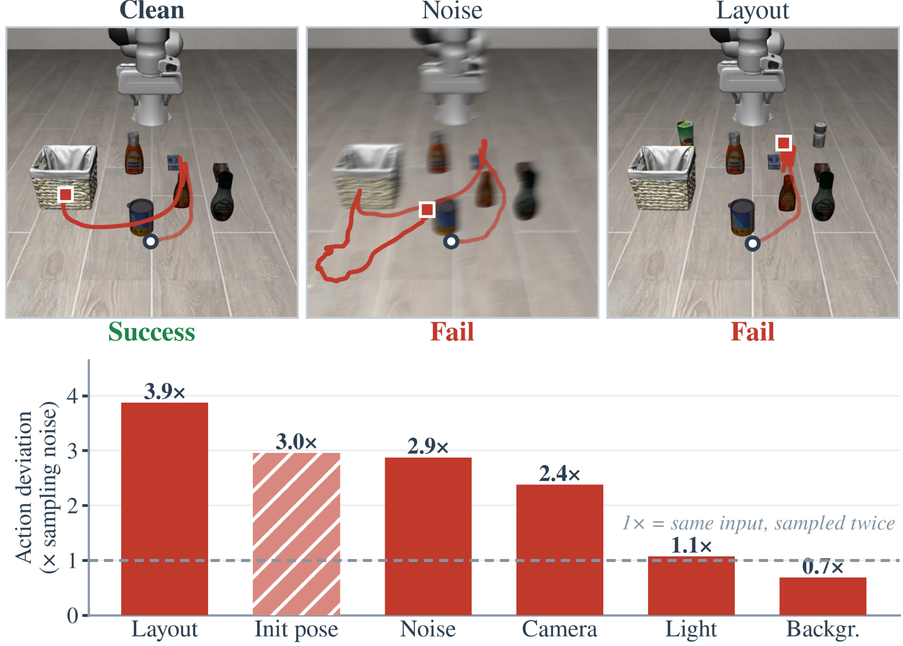
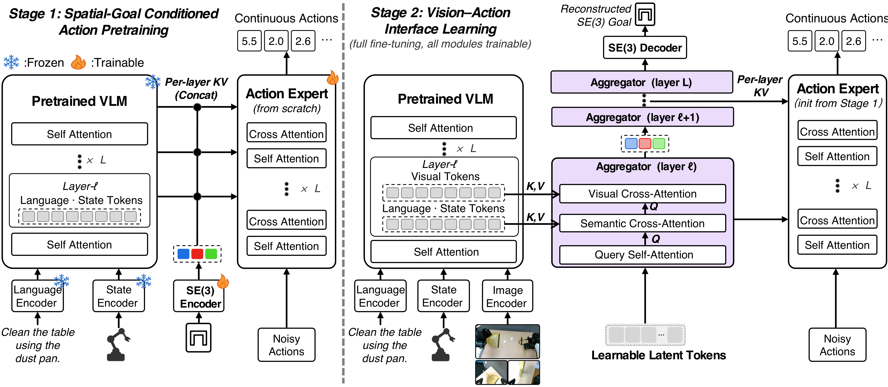
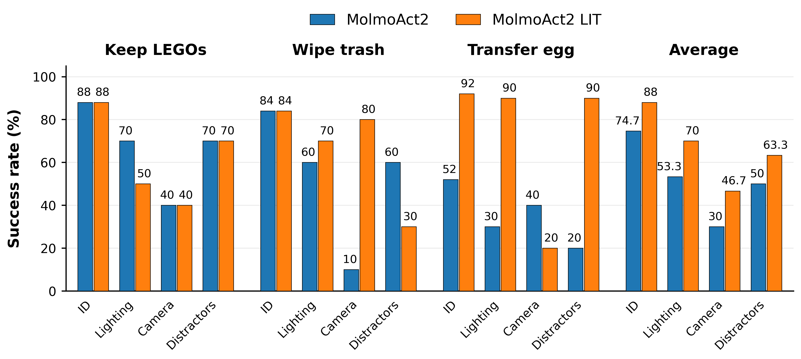
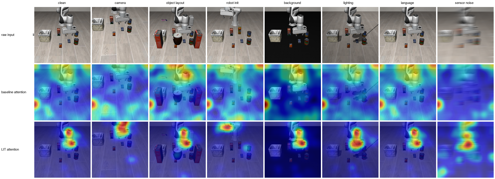
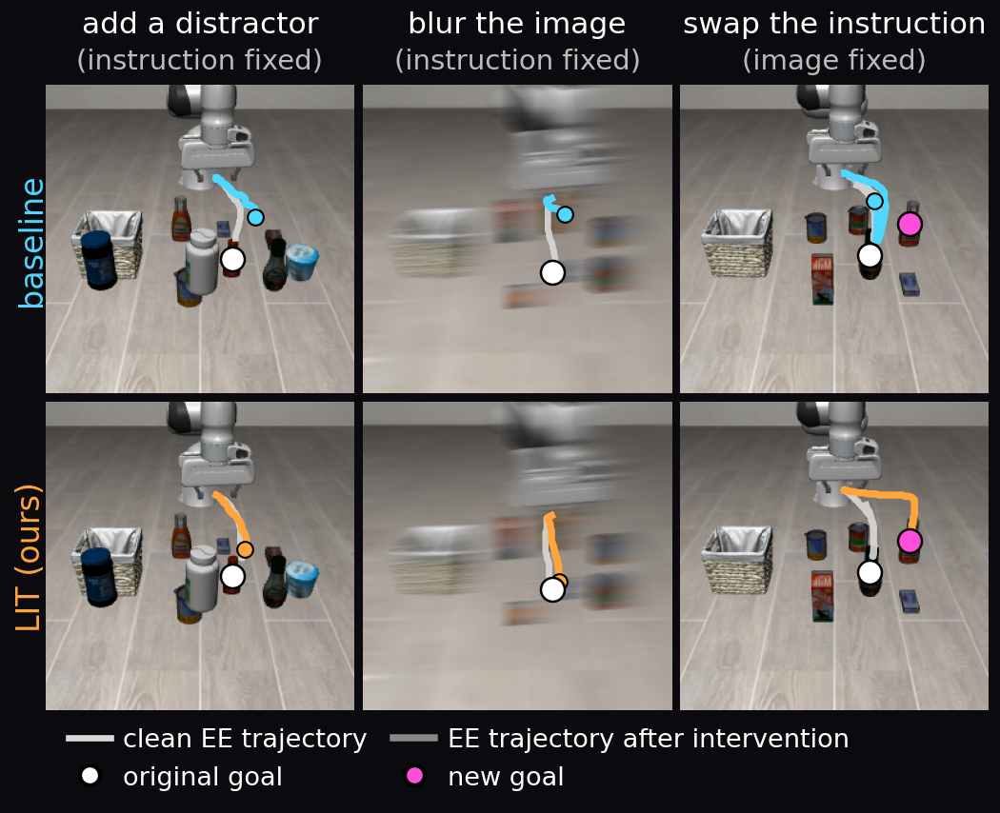
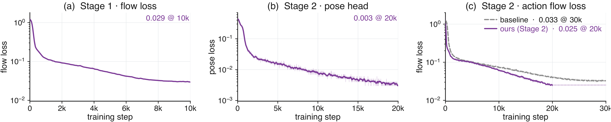

The idea
Focus on the goal.
Robots can learn visual shortcuts that fail when the scene changes. LIT routes vision through a compact, pose-supervised interface so actions stay grounded in the task. It improves generalization across four robot model architectures.
Why visual shortcuts fail
Lighting, backgrounds, and camera views can correlate with actions during training. LIT constrains visual conditioning while retaining the spatial information needed to act.

How it works
Two stages. One spatial goal.
01 Learn to act
Train the action expert with language, robot state, and a target end-effector pose—without images.
02 Connect vision
Route visual features through latent tokens supervised to predict the same target pose.

Real robots
New scenes. More successful actions.
One policy, three tasks, and changes in lighting, camera view, and distractors.
Selected rollouts: baseline failures (left), LIT successes (right). Rates above aggregate all trials. OOD = out of distribution; pp = percentage points.
Success rates by task

Simulation results
Generalization across four architectures.
LIT improves average success on LIBERO-Plus while preserving or improving in-distribution performance.
LIBERO-Plus: mean success across seven perturbation categories.
Full LIBERO-Plus results
| Perturbation | π0.5 (VLA) | MolmoAct2 (VLA) | FAST-WAM (WAM) | ImageWAM (WAM) | ||||||||
|---|---|---|---|---|---|---|---|---|---|---|---|---|
| Base | LIT | Δ | Base | LIT | Δ | Base | LIT | Δ | Base | LIT | Δ | |
| Camera Viewpoints | 58.29 | 80.30 | +22.01 | 39.40 | 48.41 | +9.01 | 16.40 | 43.83 | +27.43 | 82.16 | 84.55 | +2.39 |
| Sensor Noise | 79.89 | 91.94 | +12.05 | 49.03 | 70.77 | +21.74 | 37.70 | 56.89 | +19.19 | 96.54 | 97.57 | +1.03 |
| Lighting Conditions | 82.40 | 90.11 | +7.71 | 84.86 | 85.64 | +0.78 | 78.20 | 83.89 | +5.69 | 97.65 | 97.99 | +0.34 |
| Background Textures | 85.32 | 86.99 | +1.67 | 89.78 | 94.42 | +4.64 | 53.70 | 57.22 | +3.52 | 88.26 | 94.24 | +5.98 |
| Robot Initial States | 60.71 | 63.71 | +3.00 | 50.71 | 59.03 | +8.32 | 44.50 | 48.86 | +4.36 | 47.81 | 60.19 | +12.38 |
| Object Layout | 64.00 | 73.11 | +9.11 | 55.90 | 71.61 | +15.71 | 60.70 | 64.17 | +3.47 | 77.72 | 83.67 | +5.95 |
| Language Instructions | 52.15 | 71.50 | +19.35 | 75.69 | 73.58 | −2.11 | 68.90 | 69.55 | +0.65 | 90.97 | 90.05 | −0.92 |
| Overall | 68.97 | 79.67 | +10.70 | 63.62 | 71.92 | +8.30 | 51.44 | 60.63 | +9.19 | 83.02 | 86.89 | +3.87 |
Success (%). Δ is the change from the paired baseline.
In-distribution LIBERO results
| Model | Variant | Spatial | Object | Goal | Long | Avg. |
|---|---|---|---|---|---|---|
| π0.5 VLA | Baseline | 88.60 | 93.40 | 89.20 | 79.80 | 87.75 |
| LIT | 90.20 | 98.80 | 93.40 | 84.80 | 91.80 | |
| MolmoAct2 VLA | Baseline | 93.00 | 97.80 | 95.40 | 87.80 | 93.50 |
| LIT | 94.60 | 96.20 | 95.20 | 90.40 | 94.10 | |
| FAST-WAM WAM | Baseline | 98.20 | 100.00 | 97.00 | 95.20 | 97.60 |
| LIT | 98.80 | 99.80 | 98.40 | 95.40 | 98.10 | |
| ImageWAM WAM | Baseline | 98.40 | 100.00 | 97.60 | 96.40 | 98.10 |
| LIT | 99.60 | 99.20 | 99.20 | 95.60 | 98.40 |
Success (%). Better results within each architecture are bold.
Inside the interface
See the predicted goal.
Red marks the predicted target pose; cyan marks the current gripper pose. Predictions come from vision. MolmoAct2 rollouts play at half speed.
8 in-distribution rollouts
8 out-of-distribution rollouts
Unseen cameras, lighting, backgrounds, and distractors.
A closer look
What makes the difference?
Task-focused attention
LIT’s attention stays closer to relevant robot–object regions as scenes change.
Responsive to goals
Actions resist irrelevant visual changes and adapt when the goal changes.
Both stages matter
Removing the action prior or pose supervision reduces generalization.
Attention and intervention figures


Training dynamics

Ablation results
| Variant | ID | OOD: LIBERO-Plus | |||||||
|---|---|---|---|---|---|---|---|---|---|
| LIBERO Avg. | Camera | Noise | Lighting | Backgr. | Robot | Layout | Lang. | Overall | |
| MolmoAct2 | 93.50 | 39.40 | 49.03 | 84.86 | 89.78 | 50.71 | 55.90 | 75.69 | 63.62 |
| Vanilla staged training | 93.75 | 43.28 | 52.09 | 85.17 | 88.08 | 55.16 | 60.98 | 73.46 | 65.46 |
| LIT w/o Stage 1 & pose supervision | 93.45 | 39.84 | 49.34 | 87.22 | 89.63 | 53.00 | 68.20 | 72.67 | 65.70 |
| LIT w/o Stage 1 | 93.70 | 46.15 | 54.65 | 87.13 | 86.34 | 63.10 | 66.43 | 73.80 | 68.23 |
| LIT w/o pose supervision | 93.50 | 42.78 | 60.02 | 91.07 | 88.38 | 57.81 | 68.85 | 73.11 | 68.86 |
| Baseline w/ pose supervision | 93.20 | 40.32 | 51.30 | 89.00 | 90.13 | 55.45 | 58.37 | 73.56 | 65.45 |
| LIT w/ direct visual access | 94.25 | 42.96 | 55.28 | 88.18 | 89.22 | 62.49 | 63.74 | 72.33 | 67.74 |
| LIT | 94.10 | 48.41 | 70.77 | 85.64 | 94.42 | 59.03 | 71.61 | 73.58 | 71.92 |
MolmoAct2 success (%). LIT reaches 71.92% on LIBERO-Plus; removing Stage 1 gives 68.23%, and removing pose supervision gives 68.86%.